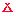
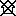
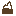

Refuges.info vous permet d'afficher sur une carte, des refuges, abris et autres points d'intérêt pour les randonneurs. Ils vous est alors possible de cliquer sur un point pour avoir des informations pratiques sur celui-ci.
Afficher la carte Afficher l'aide Accéder au site web complet Installer l'application webLégende de la carte :
- Abri
Un abri est une construction sommaire où aucune place n'est prévue pour dormir. L'isolation y est médiocre voire nulle, mais un abri peut servir pour se réfugier des intempéries.
-  Bivouac
Une aire de bivouac est un espace aproprié pour planter une tente, pour une nuit seulement dans la plupart des cas, c'est souvent une zone définie à l'intérieur d'un parc national où bivouaquer est réglementé.
 Cabane
CabaneUn cabane non gardée est une cabane fermée où il est possible de se mettre à l'abri, et de passer une nuit. Ouverte par simple générosité, il n'y a aucune garantie de la voir ouverte le jour de votre passage.
 Cabane dont il faut la clé
Cabane dont il faut la cléCabane où l'accès est réglementé par le propriétaire au le responsable à qui il faut demander la clé au préalable. L'accès y est gratuit mais il est impératif de prévoir à l'avance. La marche à suivre est dans la description de la cabane.
- Gîte
Un gîte d'étape fournit l'essentiel pour passer la nuit dans les conditions idéales. Vous aurez un service de qualité pour un prix généralement inférieur à une nuit en hôtel.
-  Cabane inutilisable
Détruite ou fermée à clé, vous ne pouvez pas compter sur cette cabane pour y dormir ou vous y abriter.
- Lac
 Point d'eau
Point d'eau Point de passage
Point de passagePoint de passage fréquent de randonneur souvent du fait du relief (par exemple les cols).
 Refuge gardé
Refuge gardéUn refuge gardé vous assure une nuit dans un bâtiment de qualitée géré par du personnel. Vous pouvez en général y dormir et y manger, en échange d'un paiement. Il est conseiller d'appeler au préalable pour réserver. Une partie est obligatoirement ouverte toute l'année.
-  Sommet
Licence et crédits :
- Carte
La carte est issue des données OpenStreetMap :
- Données : © Contributeurs d'OpenStreetMap sous licence ODbL
- Tuiles : © Thunderforest.com sous licence CC-BY-SA 2.0
- Images
Les images utilisées sur ce sites sont les réalisations de :
- Dominique pour les icônes de la carte
- Sagive SEO pour la texture gris foncé
- Haris Šumić pour la texture gris clair
- Librairies
Ce site utilise les technologies suivantes :
- Leaflet.js pour la carte
- Le plugin Rrose pour Leaflet
- Lightbox2 pour les images
- jQuery
- Crédits
Ce site est réalisé par :
- yip
- sly
- Dominique
- leosw
- Licence
L'application mobile Refuges.info ainsi que les contenu des fiches points (information, commentaires et photos) sont sous licence Creative Commons By-Sa.
Le code source de l'application est disponible ici et les fiches sont disponibles sur la page d'exportations
Paramètres :
Pas encore implémenté